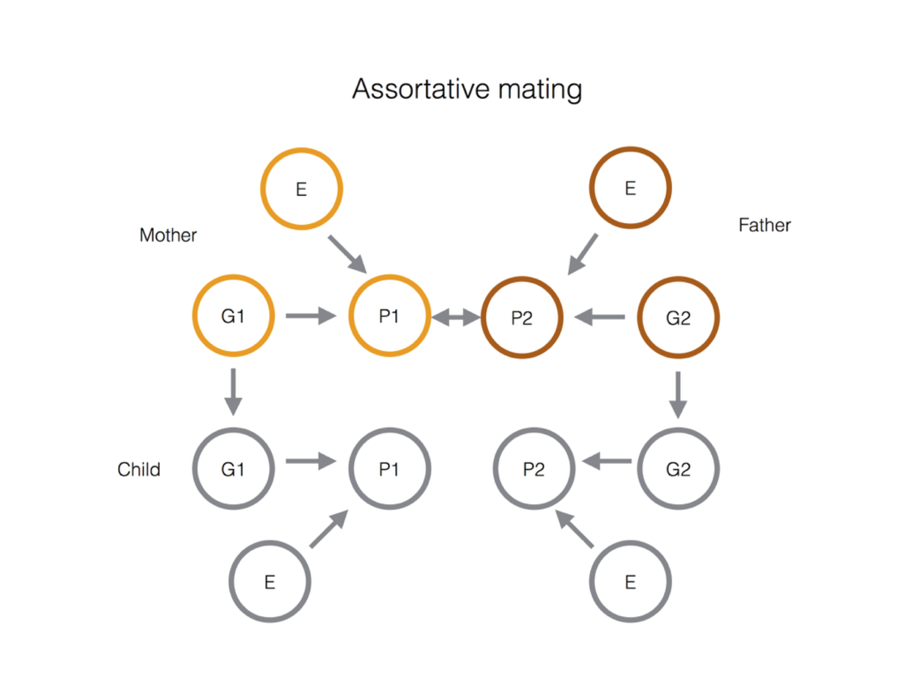

With the availability of genomic data on large cohorts of well-phenotyped individuals, there has been an increased interest in "genetic correlations" between traits. That is, when testing a set of genetic variants for association with two traits, are the effects of these genetic variants on the two traits correlated?
These are now simple, easy-to-use software packages for calculating these genetic correlations (e.g.), and it is clear that many traits show some evidence for genetic correlation. For example, LDL cholesterol and risk of coronary artery disease are genetically correlated (e.g.).
The most obvious interpretation of a genetic correlation is that it arises as a result of pleiotropy [1]--alleles that affect one trait on average also have an affect on a second trait. This intepretation can shed powerful light on the shared genetic basis of phenotypes, and can also allow the dissection of casual relationships among phenotypes (through approaches such as Mendelian randomization).
Increasingly, however, we will be faced with genetic correlations that are complex to understand and may have multiple casual underpinnings: for example, height is genetically correlated to socioecomonic status, and educational attainment is negatively genetically correlated to body mass index.
Often when these genetic correlations are described they are simply referred to as correlations; this avoids the issue of specifying how they arise. In some cases, though, genetic correlations are directly referred to as pleiotropy. However, quantative geneticists have known for a long time that genetic correlations arise for a variety of related reasons [REF?]. It is tempting to see the genetic correlations found by GWAS approaches as side-stepping these long-discussed issues. Indeed, if done well they can indeed bypass some concerns (e.g. that correlations between phenotypes within families could be driven a shared environment). However, the deeper issue that genetic correlations can arise through multiple mechanisms has not gone away.
In this post, we want to discuss some of the possible interpretations of a genetic correlation. We start with the two most common interpretations (putting aside obvious technical artifacts like shared population statification), and then discuss two additional possibilities, rarely directly tested, that merit further investigation.
1. "Biological" pleiotropy. In this situation, genetic variants that influence one trait also influence another because of some shared underlying biology. For example, genetic variants that influence age at menarche in women have correlated effects on male pattern baldness. Presumably this is because there are some shared hormonal pathways that influence both of these traits, such that altering these pathways has effects on multiple traits.
2. "Mediated" pleiotropy. In this situation, one trait is directly causally influenced by another. This of course means that a genetic variant that influences the first phenotype will have knock-on effects on the second. The classic example here is LDL cholesterol and heart disease: these two traits are postively genetically correlated, and it is now widely accepted that this correlation is due to a causal effect of LDL on risk of developing disease. Identifying this situation is has important medical implications: since LDL is causal for heart disease, then a non-genetic intervention that influences LDL (for example, a drug or an altered diet) should have an effect on someone's risk of heart disease.
We note that both forms of pleiotropy may be environmental or culturally mediated. For example, if short men are discriminated against in the job market this will generate a genetic correlaton between height and socioecomonic status that would be viewed as "mediated" pleiotropy. These two explanations of a genetic correlation are of course plausible. Some other models also seem quite plausible; the relative importance of these different models remains to be seen.
3. Parental effects. For example, imagine that more educated parents pay more attention to the diets of their children, and thus their children have lower rates of obesity. This would be detected in GWAS as a genetic correlation between educational attainment and obesity, though the causal connection between the variant and the two traits is less direct than in the previous two situations.
4. Assortative mating. For example, imagine more taller individuals tend to marry individuals with higher socioecomonic status. This would induce a genetic correlation between the traits. What is happening is that the alleles that associated with both traits co-occur in the same individuals (the offspring of these assortatively-mating parents). 
To illustrate this point, we simulated two traits that share no pleiotropic genetic variants in common with 100 unlinked loci each. We simulated positive assortative mating for a single generation [2]. We then plotted the effect sizes of the variants casually affecting trait 1 against these perceived affect of these loci on trait 2, as estimated from a sample of 100k children. There is a clear relationship induced by even a single generation of assortative mating. When alleles that increase both traits are brought together in the offspring this induces a form of linkage disequibrium )LD) between the loci underlying the same traits (even if the loci are not genetically linked). If assortative mating continues over multiple generations this LD effect is compounded and builds to an equilibrium level of genetic correlation between the two traits (Crow and Kimura).
How can we determine the relative contributions of these latter two causes of genetic correlation? Family studies could help--for example, studies in the UK Biobank have shown that assorative mating contributed to the heritability of height [3], this style of study could be extended to cross-trait comparisons. For example, the polygenic score for each phenotype could be calculated for each parent, and the genetic correlation between parents could be estimated.This would allow for the genetic effect of assortative mating to the assessed. Although we note that even if assortative mating is absent in the parental generation, genetic correlations from previous generations of assortative mating could be present (as they decay through meiotic segregation and recombination). Similarly parental effects can be tested by estimating polygenic scores for parent and child. THERE ARE A FEW REFS FOR THIS RIGHT?
---
[1] Note that the pleiotropy we see as quantitative geneticists can be mediated through environmental effects. This is simply a statement that alleles affect multiple traits, not that those shared effects have simple "molecular" basis.
[2] Details of the simulation: we simulated 100 genetic variants influencing a trait with 50% narrow-sense heritability. Effect sizes for each locus affecting trait 1 were drawn from a normal distribution, with no effect on trait 2 and the same for the loci affecting trait two. We simulated positive assortative mating with a given correlation coefficient (0.3 in this case) by simulating a male's phenotype (trait 2)giventhe female phenotype (trait 1) from the conditional normal, then choosing the male who's value of trait 2 was closest to this. The complete simulation code is available at GIT LINK.
Indeed, while we have explained all of these effects in terms of genetic covariance, they can also contribute to inflating the additive genetic variance contributed by a trait. For example, couples assortative mate by height, therefore, alleles contributing to tallness tend to be present in taller individuals even more than we would predict from their 'true' effect size. Therefore, the effect sizes of alleles may be mildly overestimated by this effect.